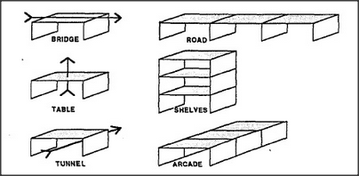

Why is chaining so important? Because, as we've just seen, it seems to work in many different realms. More than that, it can also work in several ways at once, inside the same world. Consider how, with no apparent mental strain at all, we can first imagine the same kind of arch to be a bridge, a tunnel, or a table — and then we can imagine chains of these, according to quite different views:
Chaining seems to permeate not only how we reason, but how we think of structures in space and time. We find ourselves involved with chains whenever we imagine or explain. Why does the ability to build mental chains help us solve so many different kinds of problems? Perhaps because all sorts of chains share common properties like these:
When chains are stressed, the weakest links break first. To fix a broken chain, one needs to repair only its broken links. No part of a chain can be removed if both ends remain fixed. If pulling A makes B move, there must be a chain connecting A and B.
Each separate rule seems common sense, at least when we apply it to a solid thing like a bridge, a fence, or a physical chain. But why do chains apply so well to insubstantial lines of thought? It is because there's such a good analogy between how chains can break and how reasoning can fail.